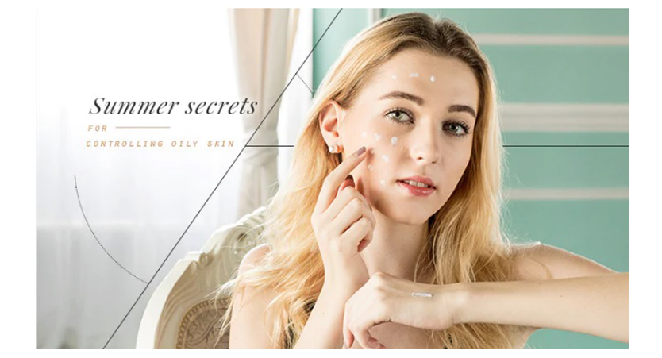
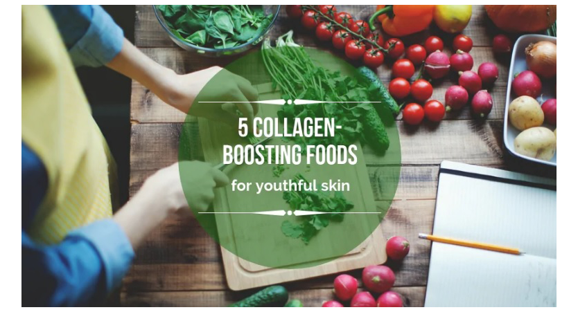
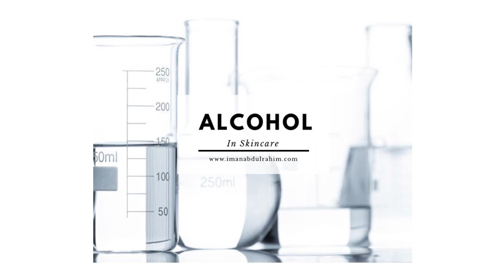
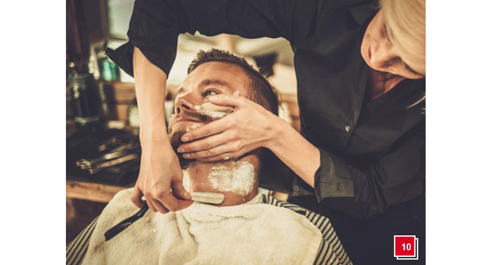
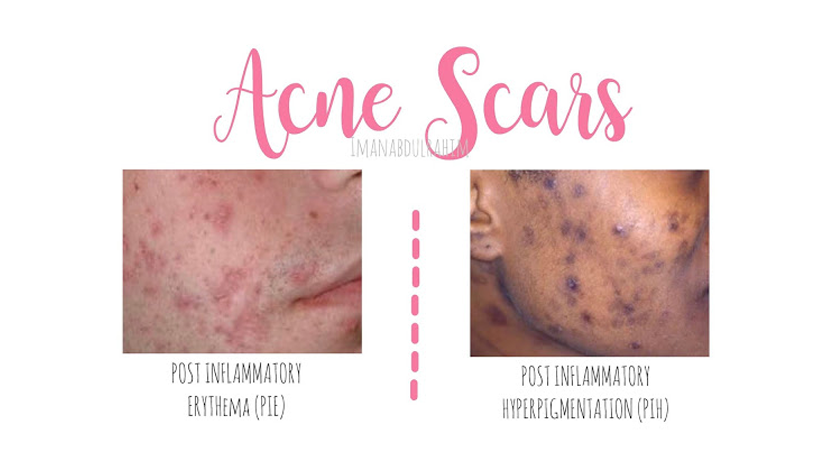
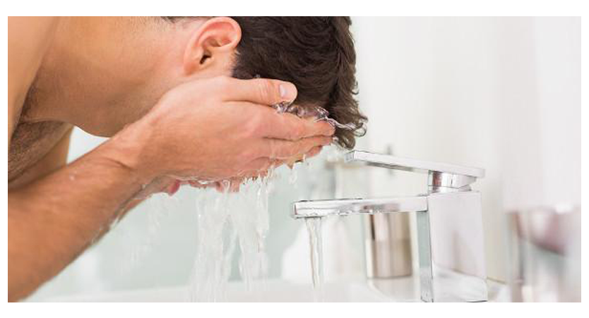
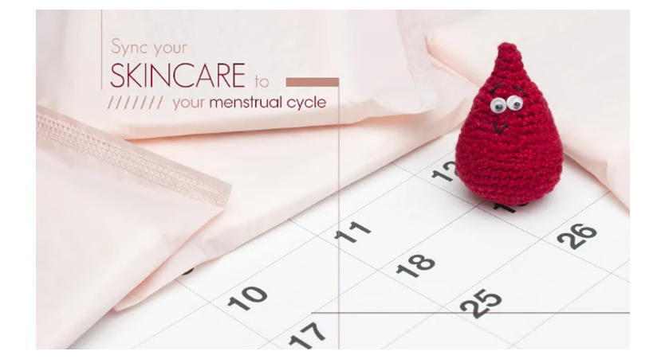
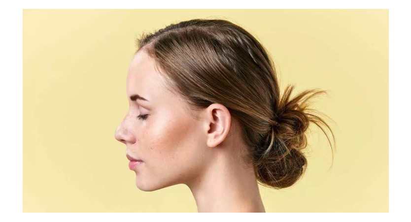

 Summer can be a nightmare for girls with oily skin – no one wants to spend hours perfecting their makeup, only to have oil and sweat ruin it when they step outdoors! So how can you prevent your makeup from running and melting like ice-cream in the hot sun? READ MORE! |
 We all know our bodies naturally produce collagen. However, as we hit our 30s, the production of collagen in our bodies inevitably slows down so our skin begins to lose its elasticity and firmness. Indeed, collagen plays a key role in keeping our skin looking smooth, plump and glowing. READ MORE! |
 Good alcohols? Tak semua alcohol tu tak elok. What about other alcohols? Normally dia dipanggil fatty-alcohols. Dia tak mengeringkan and itn fact, bagus untuk kulit especially kulit kering sebab dia buat kulit jadi lagi lembut and lock segala hydration. Contoh good alcohols? 1. Cetyl alcohol 2. Stearyl alcohol 3. Cetearyl alcohol READ MORE! |
| _________________________________________________________________ | ||
|---|---|---|
 From fighting acne decades past puberty to scoffing at the first signs of wrinkles, it’s hard to win the good-skin game. But before you curse your genes, ask yourself whether your skincare routine and lifestyle habits are up to par. And by that we don’t mean clocking hours in front of the mirror or stealing your girlfriend’s fancy facial products. READ MORE! |
 First of all, kena tahu dulu parut jerawat tu yang gelap atau yang merah. Yang gelap/brown biasanya dipanggil Post Inflammatory Hyperpigmentation (PIH) and yang merah merah tu Post Inflammatory Erythema (PIE). READ MORE! |
 Men’s skincare should be straight forward and easy. There is no need for five-step peels or multiple layers of creams. Buy high quality, all natural products and your face will thank you (and the woman of your life will probably steal your products too). The following men's skin care routine should be performed daily- most likely upon waking up and before going to bed. It’s easy to follow and will guarantee a better looking complexion. READ MORE! |
| _________________________________________________________________ | ||
 Did you know the hormone changes in your menstrual cycle can affect your skin? That’s why it’s important to sync your skincare routine to your 28-day cycle and treat your skin accordingly. Follow these rules to avoid hormonal breakouts! 1/ Day 1-7 During the seven days of your period, your oestrogen and progesterone fall to their lowest levels, making your skin dull. Focus on keeping your skin hydrated and alleviating dark circles around your eyes, and avoid products that contain alcohol or fruit acids. READ MORE! |
From the mood-boosting bubble bath to the Sunday face mask we swear by, we’ve put together the perfect regime to keep you calm, collected and clear-skinned for a busy week ahead… It’s not Sunday that’s the problem – we love the lie-in, the brunch and the roast – but after all this comes Smonday, the time around mid-afternoon when it stops being the weekend and you start thinking about… we’ll whisper it, *Monday*. Symptoms of a classic case of the Smondays include panicking about work, realising you have nothing clean to wear tomorrow – and alarm-clock dread. This happens every Sunday, but it doesn’t have to. Follow our Smonday plan and you can kick that dread into touch. READ MORE! |
 Nutrition is important for health. An unhealthy diet can damage your metabolism, cause weight gain and even hurt organs, such as your heart and liver. But what you eat also impacts another organ — your skin. As scientists learn more about diet and the body, it's increasingly clear that what you eat can significantly affect the health and aging of your skin. This article takes a look at 12 of the best foods for keeping your skin healthy. READ MORE! |